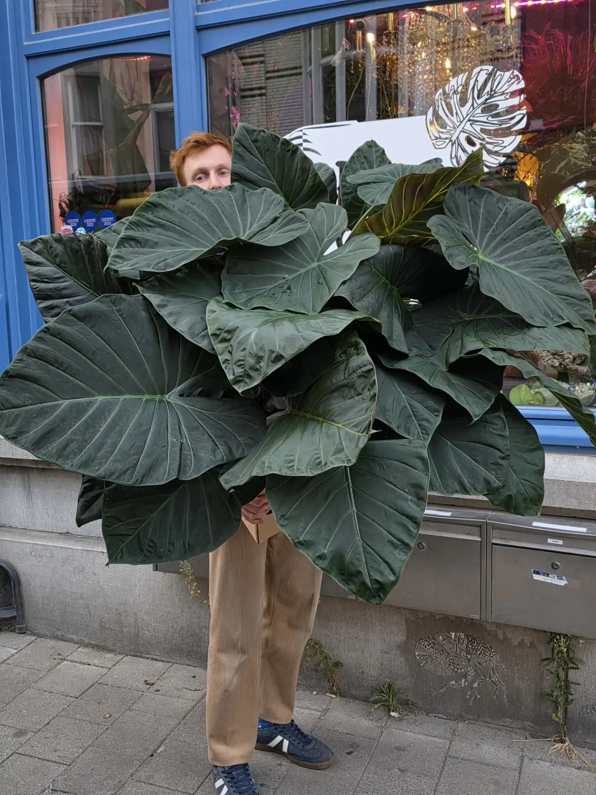
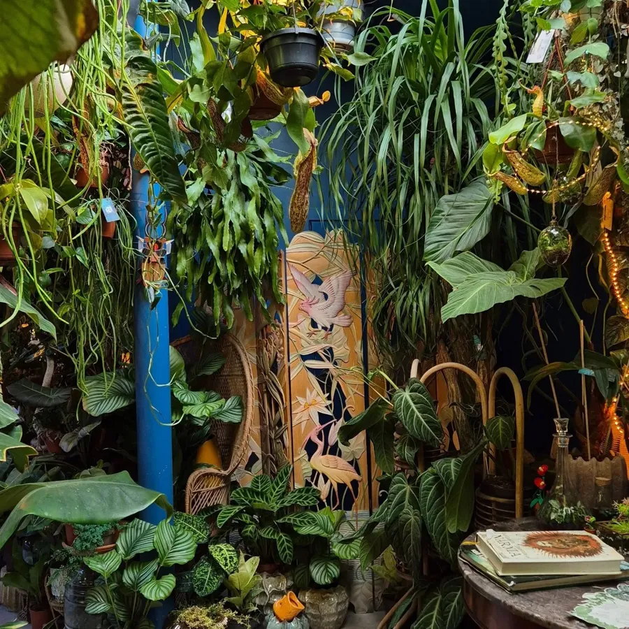
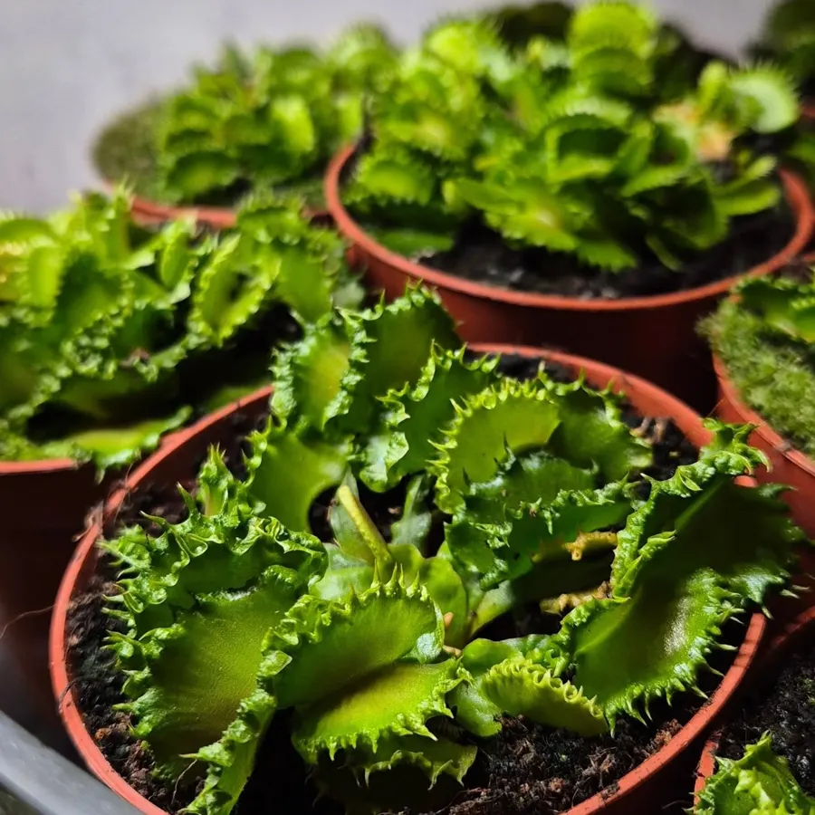
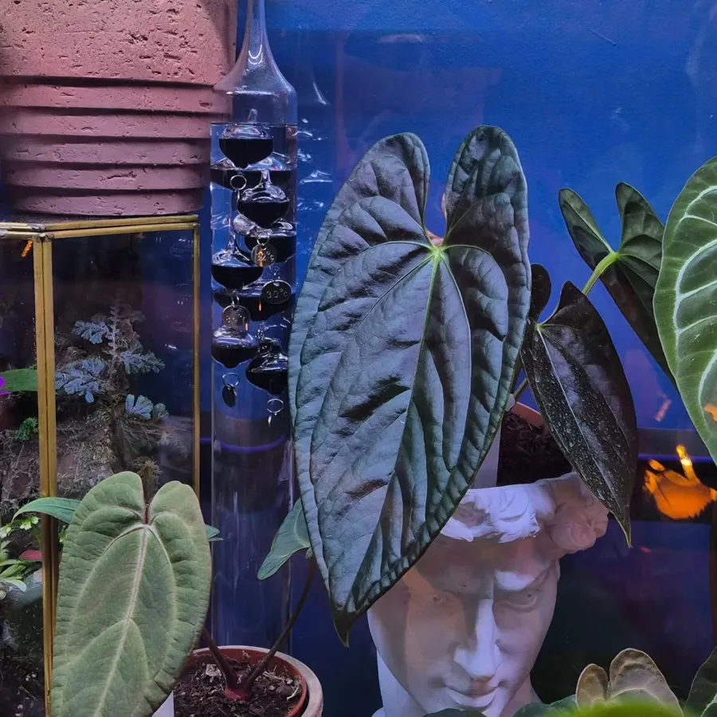
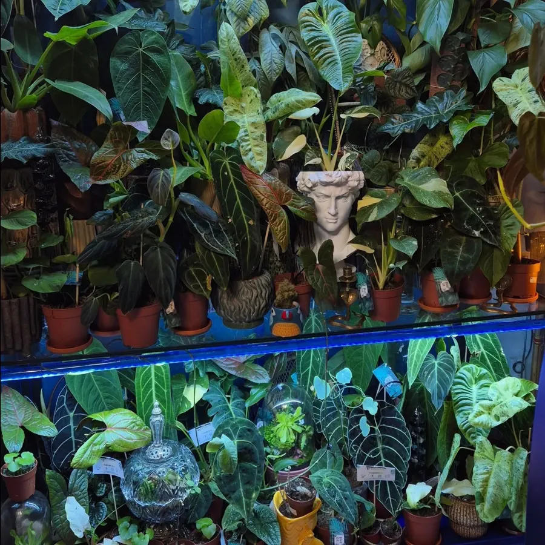
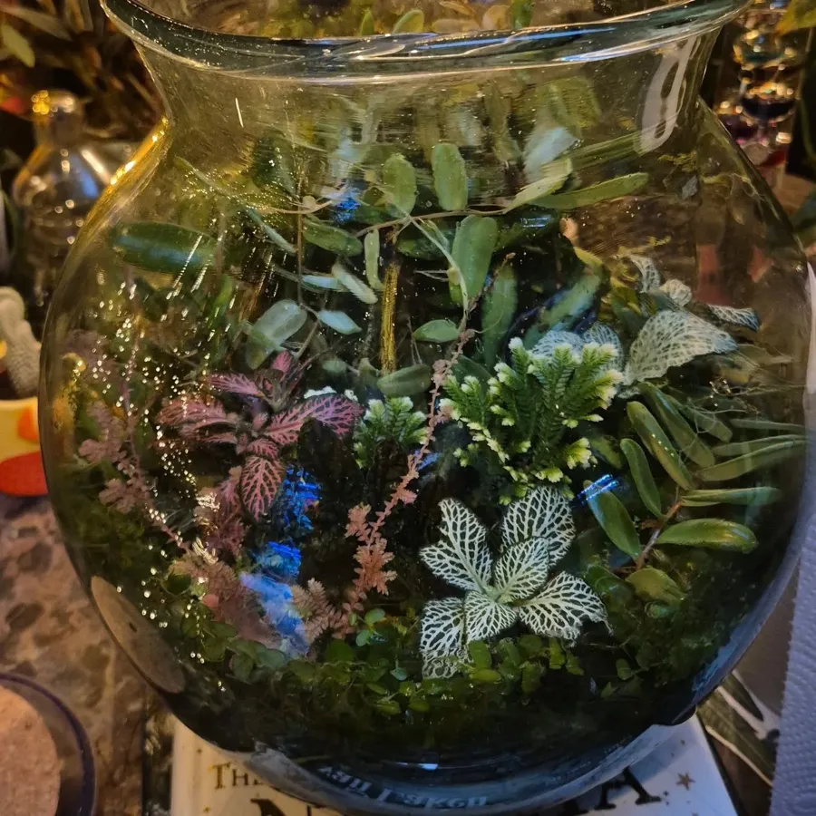
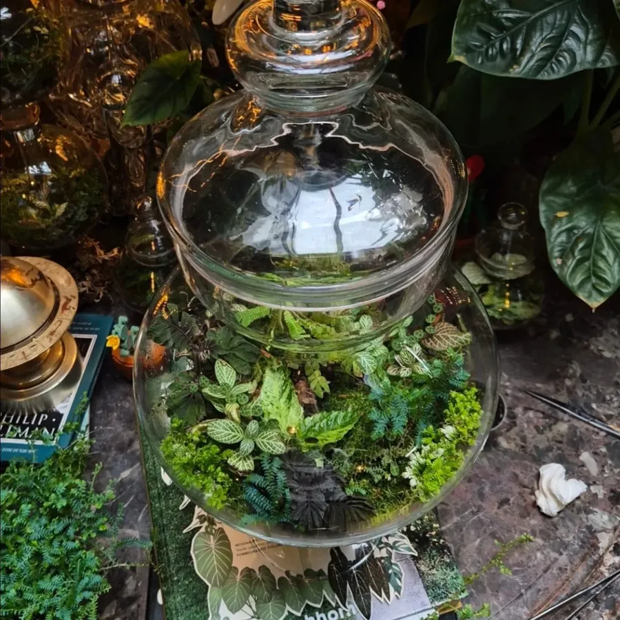
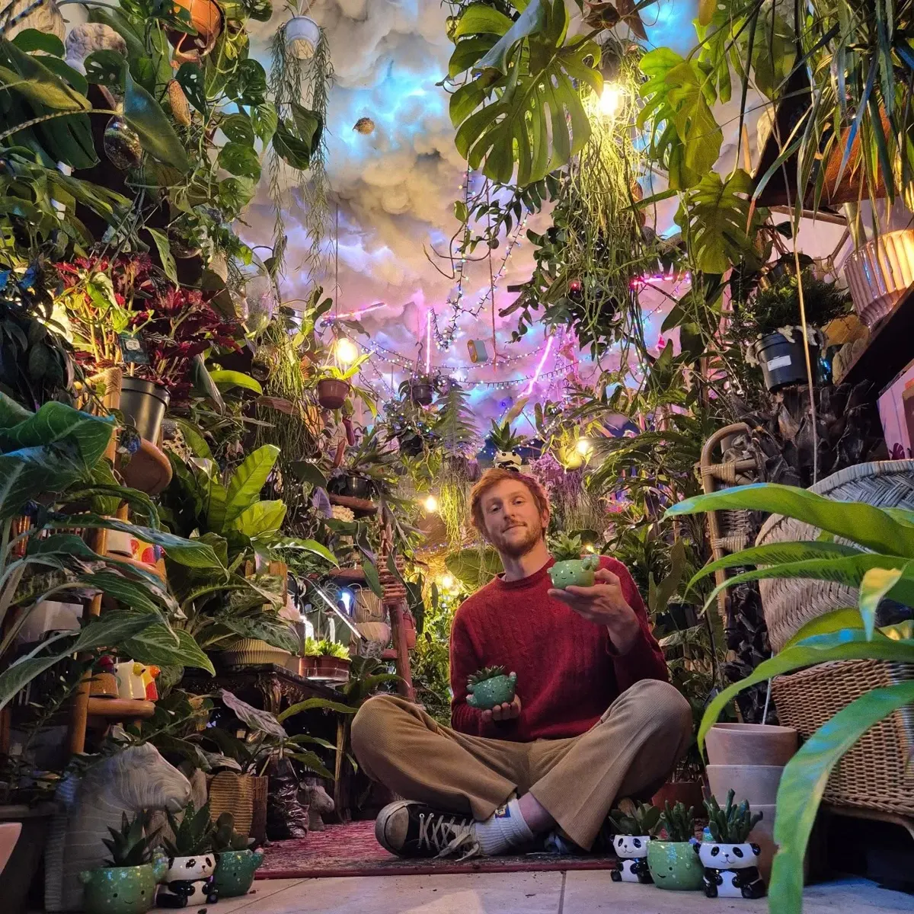
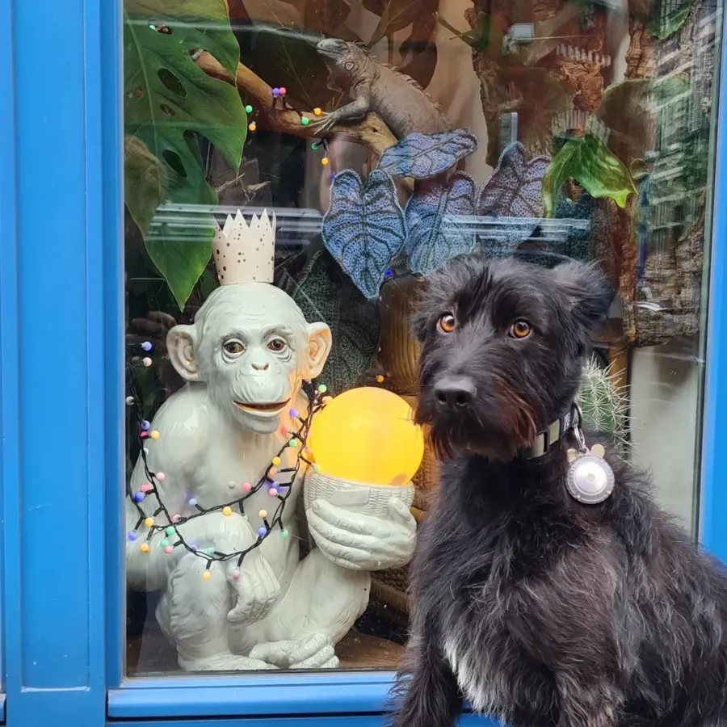
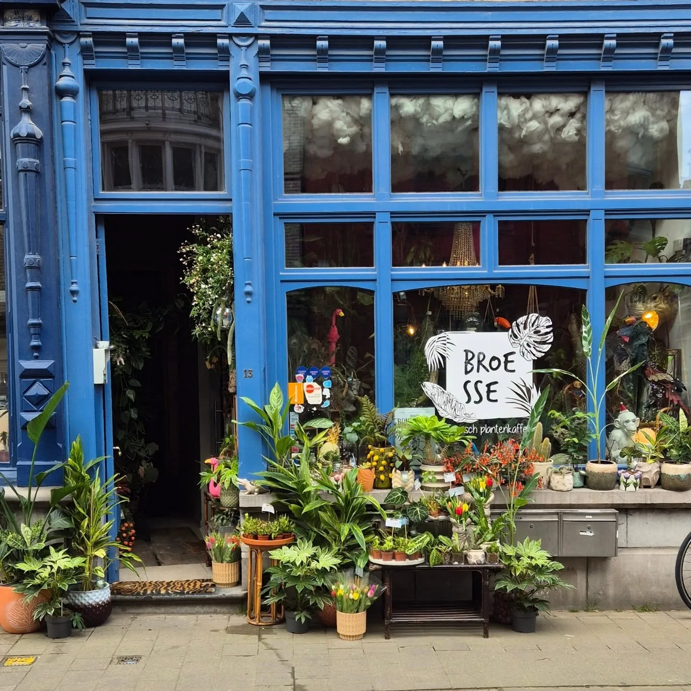

Gemakkelijk, of gemakkelijk te vermoorden.
Klein of groot, groen of kleurrijk. Er zit altijd iets tussen dat schoon staat in je living, je kantoor of je kot. Wat elke week binnenkomt, zie je eerst in onze Instagram-stories.
- Alocasia 'Regal Shield'€ 27,50
- Monstera 'Thai Constellation'€ 27
- Monstera dubia€ 17,50
- Monstera adansonii variegata€ 12,50
- Philodendron 'Summer Glory'€ 39
- Alocasia gageana aurea€ 24
- Dieffenbachia 'Big Ben' aureade grote jongen€ 119
Op is op. Vraag gerust wat er vandaag staat.
Je zal wel eens verloren lopen.
Dan helpen we je graag weer op weg. Wandel tussen de planten en de potjes, kijk eens naar boven, en neem dan achteraan plaats voor iets om te drinken. Een plekje om even tot rust te komen, midden in de stad.
De kaffee
achteraan, tussen de planten
- Koffie
- Voor wie even wil blijven hangen.
- Thee
- Geserveerd in mooie Engelse kopjes.
- Huislimonade
- Zelfgemaakt, en volgens onze klanten heerlijk.
Koffie, thee of limonade. Meer moet dat niet zijn.





Workshopke doen?
Kom je groene vingers ontdekken in de Broesse. Tijdens de week, na de uren of op aanvraag.
Boeken doe je telefonisch, via WhatsApp of gewoon in de winkel.
Boek via WhatsApp


Wie geeft hier nu eigenlijk al die planten water?
Ik. Sinds begin 2022 sta ik tussen de plantjes in de Baudelostraat. Ik ga zelf op zoek naar de schoonste exemplaren, en help je graag verder als je thuis een plant hebt die het moeilijk heeft.
Op zondag en maandag krijgen de plantjes hun rust. En ik ook.
Het gebouw staat nog recht, de wolken hangen nog steeds aan het plafond en mijn vingers zijn alleen maar groener geworden.Uit een van onze verjaardagsposts op Instagram


Een oase van rust, en plantjes.
"Een oase van rust en plantjes. Supervriendelijke en attente eigenaar met de meest kalmerende stem die je altijd kan helpen met je plantjes! De huislimonade is ook heerlijk."
Krina Van den Bossche op Google"Overal waar je kijkt zie je prachtige planten en mooie bloempotten. Met prachtige wolken (van soort watten) met mooie lampjes aan het plafond."
Suzanna op Google"Wat een superleuke, hippe plantenwinkel in centrum Gent! Gelukkig woon ik hier niet of ik was zeker bankroet gegaan."
L D M op Google
Tot in de Broesse?
Op koopzondag zijn we meestal wel open. Kijk even op Instagram voor je komt.
9000 Gent